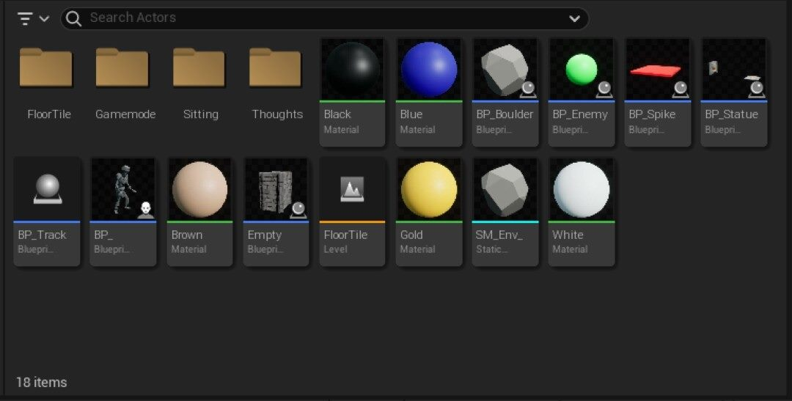
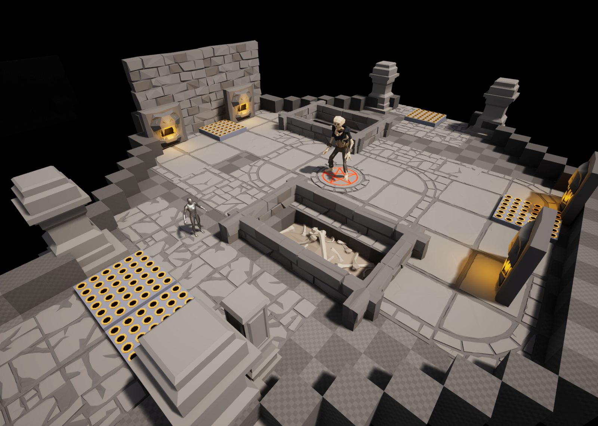
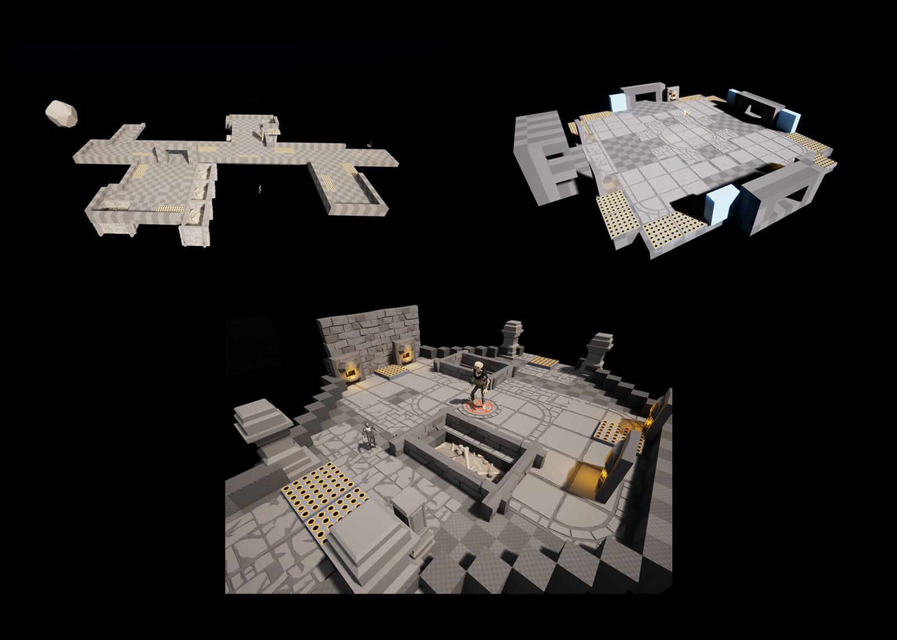
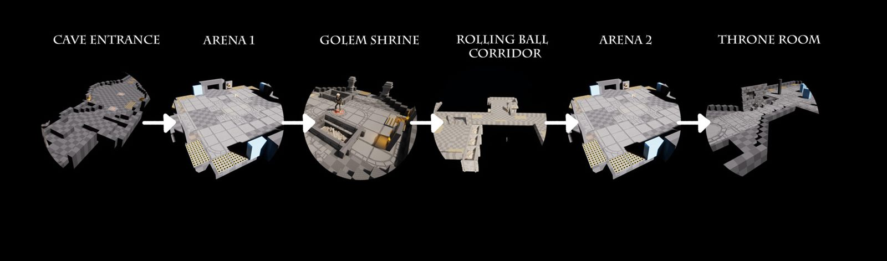
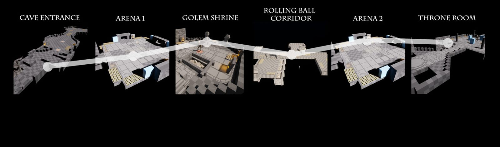
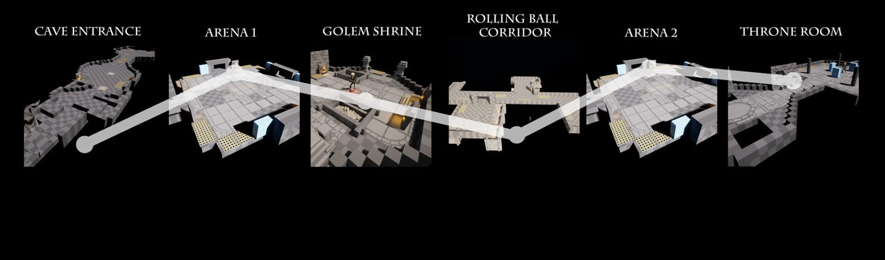

Cursebreaker: Lock and Load
A fantasy top-down shooter level inspired by Hades and Curse of the Dead Gods, built in Unreal Engine 5 over five weeks.
- Action RPG
- Top down
- Linear
- Shooter
Pre-production
References
I gathered references for landmarks, environments, rooms and traps, as both reference material and inspiration. The biggest influences were Hades and Curse of the Dead Gods. I compiled everything in PureRef into a one-page board that became the foundation for the level.
Story
An ancient curse has been unleashed! Hordes of mummies have risen in their lost temple and will soon reach the surface if they aren’t stopped. Venture forth as the intrepid adventurer Ajay, shoot your way through traps, living statues and the living dead, and find the missing pieces of the medallion to put an end to the curse!
Points of interest
- Cave Entrance
- Corridor
- Arena
- Golem Shrine
- Throne Room
Production
Understanding metrics
To nail the metrics, I built a gym out of default Unreal shapes, using the Unreal mannequin and simple shapes as markers for game objects. Once the metrics felt right, I blocked out rough 3D mock-ups of every level, start to finish.

Combat spaces
It's a shoot-fest, but players can beat enemies in different ways: hidden spike traps, healing items and statues can all be used against them. This encourages players to vary how they play.

Multiple levels
The game is split into levels with different combat scenarios and difficulty:
- Corridor levels (Easy): fight from one end to the other, defeating every enemy. Moderate enemy spawns.
- Arena levels (Medium): pure combat; players must keep moving to dodge traps and enemy attacks. Heavy enemy spawns.
- Boss levels (Hard): a boss fight where the boss is always backed up by minions.

Level flow
Layout overview

The layout is linear, split into separate levels. Apart from the two arena fights, each level has its own mechanics and flow.
Intensity chart

Combat pacing
